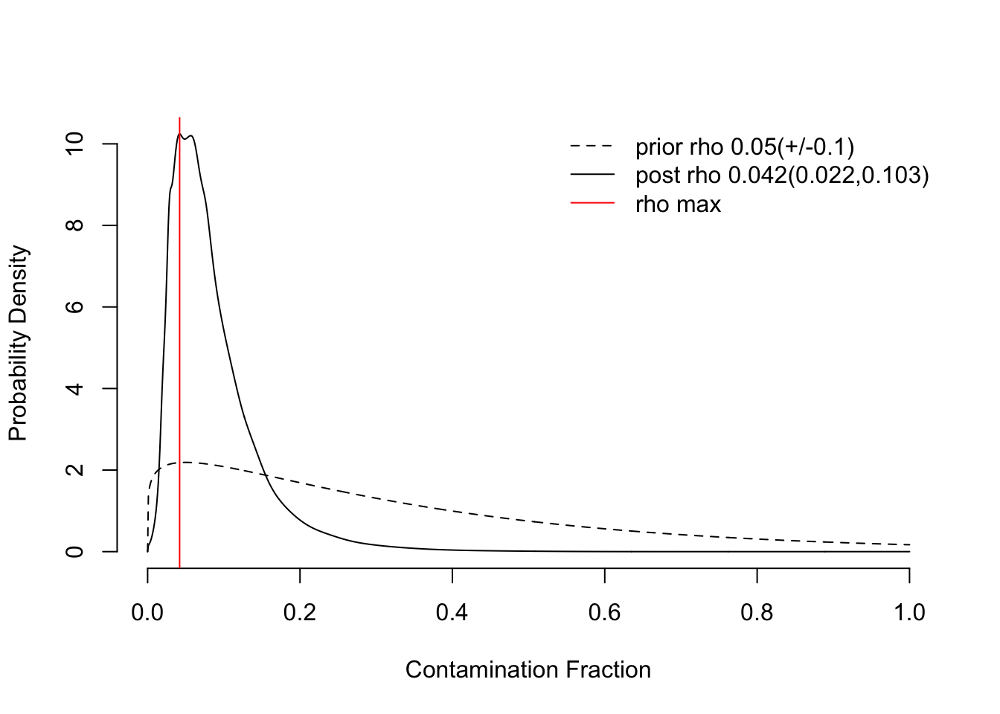

Last updated: 2026-06-30
Checks: 7 0
Knit directory:
ambient_doublet_singlecell/
This reproducible R Markdown analysis was created with workflowr (version 1.7.1). The Checks tab describes the reproducibility checks that were applied when the results were created. The Past versions tab lists the development history.
Great! Since the R Markdown file has been committed to the Git repository, you know the exact version of the code that produced these results.
Great job! The global environment was empty. Objects defined in the global environment can affect the analysis in your R Markdown file in unknown ways. For reproduciblity it’s best to always run the code in an empty environment.
The command set.seed(20260605) was run prior to running
the code in the R Markdown file. Setting a seed ensures that any results
that rely on randomness, e.g. subsampling or permutations, are
reproducible.
Great job! Recording the operating system, R version, and package versions is critical for reproducibility.
Nice! There were no cached chunks for this analysis, so you can be confident that you successfully produced the results during this run.
Great job! Using relative paths to the files within your workflowr project makes it easier to run your code on other machines.
Great! You are using Git for version control. Tracking code development and connecting the code version to the results is critical for reproducibility.
The results in this page were generated with repository version d5022ca. See the Past versions tab to see a history of the changes made to the R Markdown and HTML files.
Note that you need to be careful to ensure that all relevant files for
the analysis have been committed to Git prior to generating the results
(you can use wflow_publish or
wflow_git_commit). workflowr only checks the R Markdown
file, but you know if there are other scripts or data files that it
depends on. Below is the status of the Git repository when the results
were generated:
Ignored files:
Ignored: .DS_Store
Ignored: .RData
Ignored: .Renviron
Ignored: .Rhistory
Ignored: .Rproj.user/
Ignored: code/TMP_notes.R
Ignored: output/data/
Ignored: output/figures/
Ignored: output/results/
Ignored: renv/
Ignored: scp_file.txt
Untracked files:
Untracked: analysis/LungCancer_10x_clean_CellBender.Rmd
Untracked: code/ambient_tools/
Unstaged changes:
Modified: analysis/index.Rmd
Modified: code/LungCancer_10x/run_CellBender_LungCancer10x.sbatch
Note that any generated files, e.g. HTML, png, CSS, etc., are not included in this status report because it is ok for generated content to have uncommitted changes.
These are the previous versions of the repository in which changes were
made to the R Markdown
(analysis/LungCancer_10x_clean_soupX.Rmd) and HTML
(docs/LungCancer_10x_clean_soupX.html) files. If you’ve
configured a remote Git repository (see ?wflow_git_remote),
click on the hyperlinks in the table below to view the files as they
were in that past version.
| File | Version | Author | Date | Message |
|---|---|---|---|---|
| Rmd | d5022ca | Michelle Meier | 2026-06-30 | wflow_publish(c("analysis/LungCancer_10x_clean_decontX.Rmd", |
This markdown will apply soupX to the Lung Cancer dataset (generated here).
suppressPackageStartupMessages({
library(SingleCellExperiment)
library(tidyverse)
library(readr)
library(here)
library(Seurat)
library(scater)
library(SoupX)
library(qs2)
library(DropletUtils)
})# BACKGROUND
counts_raw <- Read10X_h5(here("data/LungCancer_10x/20k_NSCLC_DTC_3p_nextgem_intron_Multiplex_count_raw_feature_bc_matrix.h5"))$`Gene Expression`Genome matrix has multiple modalities, returning a list of matrices for this genomemeta_raw <- read_tsv(here("output/data/LungCancer_10x/LungCancer_10x_raw_metadata.tsv"), show_col_types = F)
background <- SingleCellExperiment(assays = c("counts" = counts_raw[, meta_raw$Barcode[meta_raw$type == "empty"]]))
# CELLS
counts_in <- Read10X(here("output/data/LungCancer_10x/LungCancer_10x_cellranger_allmultiplets"))
meta_cells <- read_tsv(here("output/data/LungCancer_10x/LungCancer_10x_cellranger_allmultiplets/metadata.tsv"), show_col_types = F)
all(meta_cells$Barcode == colnames(counts_in))[1] TRUE#make sce
cells_in <- SingleCellExperiment(assays = c("counts" = counts_in), colData =meta_cells %>% DataFrame())run_soupx <- function(cells, empties, name){
#ensure matching gene universe
gene_universe <- intersect(rownames(cells), rownames(empties))
cells <- cells[gene_universe, ]
empties <- empties[gene_universe,]
#clustering information is needed. Run basic workflow.
cells <- logNormCounts(cells) %>%
runPCA() %>%
runUMAP()
#run clustering (with seurat because its easier)
seu <- as.Seurat(cells, counts = "counts", data = "logcounts") #convert to seurat
# run clustering for multiple solutions
seu <- FindNeighbors(seu, reduction = "PCA", dims = 1:30, verbose = F) %>%
FindClusters(resolution = 0.8, verbose = F)
cells$clustering_soupx <- seu$originalexp_snn_res.0.8
rm(seu); gc()
#start soupX
soupchannel <- SoupChannel(tod = counts(empties), toc = counts(cells)) #prepare soupchannel
soupchannel <- setClusters(soupchannel, setNames(cells$clustering_soupx, colnames(cells)))
soupchannel <- setDR(soupchannel, reducedDim(cells, type = "UMAP", withDimnames=TRUE))
print(paste("Showing results for", name))
soupchannel <- autoEstCont(soupchannel) #using automated contamination method
out <- adjustCounts(soupchannel) #remove background
#make sce
sce_soupx <- SingleCellExperiment(list(counts=out), colData = cells@colData)
#add mitochondrial and ribo genes content
is.mito <- grepl(pattern = "^MT", rownames(sce_soupx))
sce_soupx <- addPerCellQCMetrics(sce_soupx, subsets = list(mito = is.mito))
#clean
new_meta <- sce_soupx@colData %>% as.data.frame() %>%
dplyr::rename(., ncount =sum , nfeatures =detected) %>%
select(., -c("total", "subsets_mito_detected", "subsets_mito_sum"))
sce_soupx@colData <- new_meta %>% DataFrame()
#add rounded nfeatures
sce_soupx$nfeatures_rounded <- colSums(assay(sce_soupx, "counts") > 0.5)
#add info on how many ngenes were removed (fraction)
sce_soupx$nfeature_frac_removed <- (sce_soupx$nfeatures_raw - sce_soupx$nfeatures_rounded)/sce_soupx$nfeatures_raw
sce_soupx$ncount_frac_removed <- (sce_soupx$ncount_raw - sce_soupx$ncount)/sce_soupx$ncount_raw
#export file
out_file <- sprintf("%s/%s_soupX",
here("output/data/LungCancer_10x"),
name)
DropletUtils::write10xCounts(path = out_file,
x = counts(sce_soupx),
version = "3",
overwrite = TRUE)
write_tsv(x = sce_soupx@colData %>% as.data.frame(),
file = sprintf("%s/metadata.tsv", out_file))
return(sce_soupx)
}run_soupx(cells = cells_in, empties = background, name = "LungCancer_10x_cellranger_allmultiplets")[1] "Showing results for LungCancer_10x_cellranger_allmultiplets"8535 genes passed tf-idf cut-off and 378 soup quantile filter. Taking the top 100.Using 770 independent estimates of rho.Estimated global rho of 0.04
Expanding counts from 24 clusters to 18863 cells.class: SingleCellExperiment
dim: 34352 18863
metadata(0):
assays(1): counts
rownames(34352): MIR1302-2HG AL627309.1 ... AC007325.4 AC007325.2
rowData names(1): subsets_mito
colnames(18863): AAACCCAGTCTTCGAA-1 AAACCCATCACATACG-1 ...
TTTGTTGAGCGCTGAA-1 TTTGTTGGTACCAATC-1
colData names(15): Barcode doublet_class ... nfeature_frac_removed
ncount_frac_removed
reducedDimNames(0):
mainExpName: NULL
altExpNames(0):
sessionInfo()R version 4.5.0 (2025-04-11)
Platform: aarch64-apple-darwin20
Running under: macOS Sequoia 15.7.4
Matrix products: default
BLAS: /Library/Frameworks/R.framework/Versions/4.5-arm64/Resources/lib/libRblas.0.dylib
LAPACK: /Library/Frameworks/R.framework/Versions/4.5-arm64/Resources/lib/libRlapack.dylib; LAPACK version 3.12.1
locale:
[1] en_US.UTF-8/en_US.UTF-8/en_US.UTF-8/C/en_US.UTF-8/en_US.UTF-8
time zone: Australia/Melbourne
tzcode source: internal
attached base packages:
[1] stats4 stats graphics grDevices datasets utils methods
[8] base
other attached packages:
[1] future_1.58.0 DropletUtils_1.28.0
[3] qs2_0.1.5 SoupX_1.6.2
[5] scater_1.36.0 scuttle_1.18.0
[7] Seurat_5.3.1.0000 SeuratObject_5.1.0
[9] sp_2.2-0 here_1.0.1
[11] lubridate_1.9.4 forcats_1.0.0
[13] stringr_1.5.1 dplyr_1.1.4
[15] purrr_1.2.0 readr_2.1.5
[17] tidyr_1.3.1 tibble_3.3.0
[19] ggplot2_4.0.1 tidyverse_2.0.0
[21] SingleCellExperiment_1.30.1 SummarizedExperiment_1.38.1
[23] Biobase_2.68.0 GenomicRanges_1.60.0
[25] GenomeInfoDb_1.44.0 IRanges_2.42.0
[27] S4Vectors_0.46.0 BiocGenerics_0.54.0
[29] generics_0.1.4 MatrixGenerics_1.20.0
[31] matrixStats_1.5.0 workflowr_1.7.1
loaded via a namespace (and not attached):
[1] RcppAnnoy_0.0.22 splines_4.5.0
[3] later_1.4.2 R.oo_1.27.1
[5] polyclip_1.10-7 fastDummies_1.7.5
[7] lifecycle_1.0.4 edgeR_4.6.2
[9] rprojroot_2.0.4 vroom_1.6.5
[11] hdf5r_1.3.12 globals_0.18.0
[13] processx_3.8.6 lattice_0.22-6
[15] MASS_7.3-65 magrittr_2.0.4
[17] limma_3.64.1 plotly_4.10.4
[19] sass_0.4.10 rmarkdown_2.29
[21] jquerylib_0.1.4 yaml_2.3.10
[23] httpuv_1.6.16 sctransform_0.4.2
[25] spam_2.11-1 spatstat.sparse_3.1-0
[27] reticulate_1.42.0 cowplot_1.1.3
[29] pbapply_1.7-2 RColorBrewer_1.1-3
[31] abind_1.4-8 Rtsne_0.17
[33] R.utils_2.13.0 git2r_0.36.2
[35] GenomeInfoDbData_1.2.14 ggrepel_0.9.6
[37] irlba_2.3.5.1 listenv_0.9.1
[39] spatstat.utils_3.1-4 goftest_1.2-3
[41] RSpectra_0.16-2 dqrng_0.4.1
[43] spatstat.random_3.4-1 fitdistrplus_1.2-2
[45] parallelly_1.45.0 DelayedMatrixStats_1.30.0
[47] codetools_0.2-20 DelayedArray_0.34.1
[49] tidyselect_1.2.1 UCSC.utils_1.4.0
[51] farver_2.1.2 viridis_0.6.5
[53] ScaledMatrix_1.16.0 spatstat.explore_3.4-3
[55] jsonlite_2.0.0 BiocNeighbors_2.2.0
[57] progressr_0.15.1 ggridges_0.5.6
[59] survival_3.8-3 tools_4.5.0
[61] ica_1.0-3 Rcpp_1.0.14
[63] glue_1.8.0 gridExtra_2.3
[65] SparseArray_1.8.0 xfun_0.52
[67] HDF5Array_1.36.0 withr_3.0.2
[69] BiocManager_1.30.26 fastmap_1.2.0
[71] rhdf5filters_1.20.0 callr_3.7.6
[73] digest_0.6.37 rsvd_1.0.5
[75] timechange_0.3.0 R6_2.6.1
[77] mime_0.13 scattermore_1.2
[79] tensor_1.5 spatstat.data_3.1-6
[81] R.methodsS3_1.8.2 h5mread_1.0.1
[83] renv_1.1.4 data.table_1.17.4
[85] httr_1.4.7 htmlwidgets_1.6.4
[87] S4Arrays_1.8.1 whisker_0.4.1
[89] uwot_0.2.3 pkgconfig_2.0.3
[91] gtable_0.3.6 lmtest_0.9-40
[93] S7_0.2.1 XVector_0.48.0
[95] htmltools_0.5.8.1 dotCall64_1.2
[97] scales_1.4.0 png_0.1-8
[99] spatstat.univar_3.1-3 knitr_1.50
[101] rstudioapi_0.17.1 tzdb_0.5.0
[103] reshape2_1.4.4 nlme_3.1-168
[105] rhdf5_2.52.1 cachem_1.1.0
[107] zoo_1.8-14 KernSmooth_2.23-26
[109] vipor_0.4.7 parallel_4.5.0
[111] miniUI_0.1.2 pillar_1.10.2
[113] grid_4.5.0 vctrs_0.6.5
[115] RANN_2.6.2 promises_1.3.3
[117] stringfish_0.17.0 BiocSingular_1.24.0
[119] beachmat_2.24.0 xtable_1.8-4
[121] cluster_2.1.8.1 beeswarm_0.4.0
[123] evaluate_1.0.3 locfit_1.5-9.12
[125] cli_3.6.5 compiler_4.5.0
[127] rlang_1.1.6 crayon_1.5.3
[129] future.apply_1.20.0 ps_1.9.1
[131] getPass_0.2-4 plyr_1.8.9
[133] fs_1.6.6 ggbeeswarm_0.7.2
[135] stringi_1.8.7 viridisLite_0.4.2
[137] deldir_2.0-4 BiocParallel_1.42.1
[139] lazyeval_0.2.2 spatstat.geom_3.4-1
[141] Matrix_1.7-3 RcppHNSW_0.6.0
[143] hms_1.1.3 patchwork_1.3.2
[145] bit64_4.6.0-1 sparseMatrixStats_1.20.0
[147] Rhdf5lib_1.30.0 statmod_1.5.0
[149] shiny_1.10.0 ROCR_1.0-11
[151] igraph_2.1.4 RcppParallel_5.1.10
[153] bslib_0.9.0 bit_4.6.0